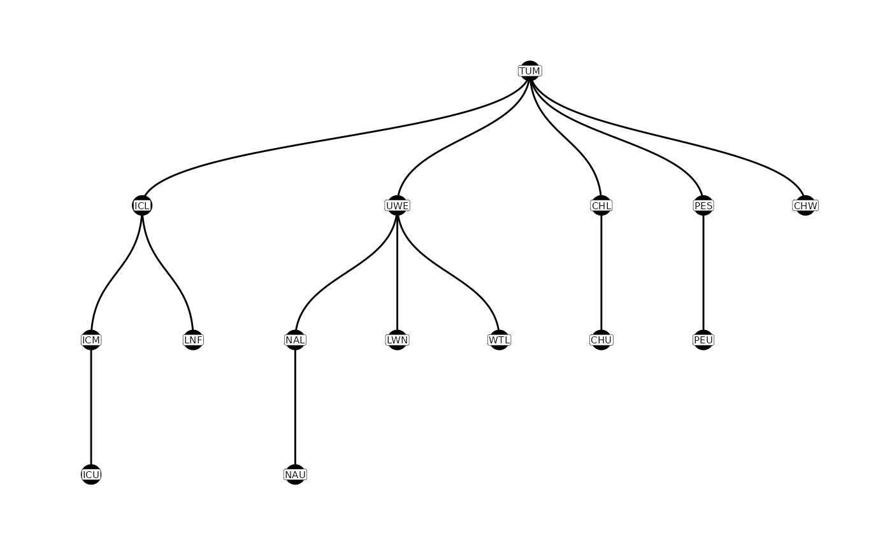
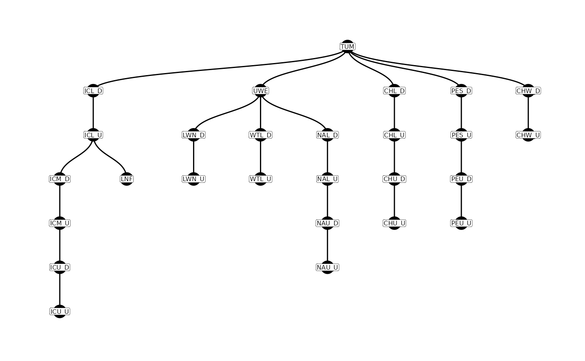

vignettes/Prep_PIT_data.Rmd
Prep_PIT_data.RmdFor more detailed explanations of the following topics, we encourage users to read through these vignettes:
This vignette shows how to use the PITcleanr package to
wrangle PIT tag data to either summarize detections or prepare the data
for further analysis. PITcleanr can help import complete
tag histories from PTAGIS, build a
configuration file to help assign each detection to a “node”, and
compress those detections into a smaller file. It contains functions to
determine which detection locations are upstream or downstream of each
other, build a parent-child relationship table of locations, and assign
directionality of movement between each detection site. For analyses
that focus on one-way directional movement (e.g., straightforward CJS
models), PITcleanr can help determine which detections fail
to meet that one-way movement assumption and should be examined more
closely, and which detections can be kept.
The PITcleanr package can be installed as an R package
from GitHub by using Hadley Wickham’s devtools package:
# install and load remotes, if necessary
install.packages("devtools")
remotes::install_github("KevinSee/PITcleanr",
build_vignettes = TRUE)devtools may require a working development environment.
Further details around the installation of devtools can be
found here.
To install the latest development version of
PITcleanr:
remotes::install_github("KevinSee/PITcleanr@develop")Alternatively, the PITcleanr compendium can be
downloaded as a zip file from from this URL: https://github.com/KevinSee/PITcleanr/archive/master.zip
Once extracted, the functions can be sourced individually, or a user can
build the R package locally.
Once PITcleanr is successfully installed, it can be
loaded into the R session. In this vignette, we will also use many
functions from the tidyverse group of packages, so load those
as well:
library(PITcleanr)
library(dplyr)
library(readr)
library(stringr)
library(purrr)
library(tidyr)
library(ggplot2)
library(lubridate)Note that many of the various queries in PITcleanr
require a connection to the internet.
The Columbia Basin PIT Tag Information System (PTAGIS) is the centralized regional
database for PIT-tag detections within the Columbia River Basin. It
contains a record of each detection of every PIT tag, including the
initial detection, or “mark”, when the tag is implanted in the fish,
detections on PIT-tag antennas, recaptures (e.g. at weirs) and
recoveries (e.g. carcass surveys). It contains a record of every
individual detection, which means potentially multiple records of a tag
being detected on the same antenna over and over e.g., in the case that
it is not moving. Therefore, querying PTAGIS for all of these detections
leads to a wealth of data, which can be unwieldy for the user.
PITcleanr aims to compress that data to a more manageable
size, without losing any of the information contained in that
dataset.
PITcleanr starts with a complete capture history query
from PTAGIS for a select group of tags
of interest. The user will need to compile this list of tags themselves,
ideally in a .txt file with one row per tag number, to make it easy to
upload to a PTAGIS query.
For convenience, we’ve included one such file with
PITcleanr, which is saved to the user’s computer when
PITcleanr is installed. The file, “TUM_chnk_tags_2018.txt”,
contains tag IDs for Chinook salmon adults implanted with PIT tags at
Tumwater Dam in 2018. The following code can be used to find the path to
this example file. The user can use this as a template for creating
their own tag list as well.
system.file("extdata",
"TUM_chnk_tags_2018.txt",
package = "PITcleanr",
mustWork = TRUE)The example file of tag codes is very simple:
#> # A tibble: 1,406 × 1
#> X1
#> <chr>
#> 1 3DD.00777C5CEC
#> 2 3DD.00777C5E34
#> 3 3DD.00777C7728
#> 4 3DD.00777C8493
#> 5 3DD.00777C9185
#> 6 3DD.00777C91C3
#> 7 3DD.00777CE6B8
#> 8 3DD.00777CEB31
#> 9 3DD.00777CEF93
#> 10 3DD.00777CEFC1
#> # ℹ 1,396 more rowsOnce the user has created their own tag list, or located this example
one, they can go to the PTAGIS
homepage to query the complete tag histories for those tags. The
complete tag history query is available under Advanced
Reporting, which requires a free account from PTAGIS. From the homepage, click on “Login/Register”,
and either login to an existing account, or click “Create a new account”
to create one. Once logged in, scroll down the dashboard page to the
Advanced Reporting Links section. PTAGIS allows users to save
reports/queries to be run again. For users who plan to utilize
PITcleanr more than once, it saves a lot of time to build
the initial query and then save it into the user’s PTAGIS account. It is
then available through the “My Reports” link. To create a new query,
click on “Query Builder”, or “Advanced Reporting Home Page” and then
““Create Query Builder2 Report”. From here, choose “Complete Tag
History” from the list of possible reports.
There are several query indices on the left side of the query
builder, but for the purposes of PITcleanr only a few are
needed. First, under “1 Select Attributes” the following attributes are
required to work with PITcleanr:
This next group of attributes are not required, but are highly recommended:
Simply move these attributes over from the “Available” column to the “Selected:” column on the page by selecting them and clicking on the right arrow between the “Available” and “Selected” boxes. Other fields of interest to the user may be included as well (e.g. Event Length), and will be included as extra columns in the query output.
The only other required index is “2 Select Metrics”, but that can remain as the default, “CTH Count”, which provides one record for each event recorded per tag.
Set up a filter for specific tags by next navigating to the “27 Tag
Code - List or Text File” on the left. After selecting “Tag” under
“Attributes:”, click on “Import file…”. Simply upload the .txt file
containing your PIT tag codes of interest, or alternatively, feel free
to use the “TUM_chnk_tags_2018.txt” file provided with
PITcleanr. After choosing the file, click on “Import” and
the tag list will be loaded (delimited by semi-colons). Click “OK”.
Under “Report Message Name:” near the bottom, name the query something appropriate, such as “TUM_chnk_cth_2018”, and select “Run Report”. Once the query has successfully completed, the output can be exported as a .csv file (e.g. “TUM_chnk_cth_2018.csv”). Simply click on the “Export” icon near the top, which will open a new page, and select the default settings:
And click “Export”, again.
PITcleanr includes several example files to help users
understand the appropriate format of certain files, and to provide
demonstrations of various functions. The system.file
function locates the file path to the subdirectory and file contained
with a certain package. One such example is PTAGIS output for the
Tumwater Chinook tags from 2018. Using similar code
(system.file), the user can set the file path to this file,
and store it as a new object ptagis_file.
ptagis_file = system.file("extdata",
"TUM_chnk_cth_2018.csv",
package = "PITcleanr",
mustWork = TRUE)Alternatively, if the user has run a query from PTAGIS as described
above, they could set ptagis_file to the path and file name
of the .csv they downloaded.
# As an example, set path to PTAGIS query output
ptagis_file = "C:/Users/USER_NAME_HERE/Downloads/TUM_chnk_cth_2018.csv"Note that in our example file, there are 13501 detections (rows) for 1406 unique tags, matching the number of tags in our example tag list “TUM_chnk_tags_2018.txt”. For a handful of those tags, in our case 221, there is only a “Mark” detection i.e., that tag was never detected again after the fish was tagged and released. For the remaining tags, many of them were often detected at the same site and sometimes on the same antenna. Data like this, while full of information, can be difficult to analyze efficiently. To illustrate, here is an example of some of the raw data for a single tag:
| Tag Code | Event Site Code Value | Event Date Time Value | Antenna Id | Antenna Group Configuration Value | Mark Species Name | Mark Rear Type Name | Event Type Name | Event Site Type Description | Event Release Site Code Code | Event Release Date Time Value | Cth Count |
|---|---|---|---|---|---|---|---|---|---|---|---|
| 3DD.0077767AC6 | TUM | 2018-06-22 06:40:12 | NA | 0 | Chinook | Hatchery Reared | Mark | Dam | TUMFBY | 2018-06-22 06:40:12 | 1 |
| 3DD.0077767AC6 | NAU | 2018-07-06 22:04:04 | 44 | 100 | Chinook | Hatchery Reared | Observation | Instream Remote Detection System | NA | NA | 1 |
| 3DD.0077767AC6 | NAU | 2018-07-06 22:04:28 | 42 | 100 | Chinook | Hatchery Reared | Observation | Instream Remote Detection System | NA | NA | 1 |
| 3DD.0077767AC6 | NAU | 2018-07-08 22:26:21 | 45 | 100 | Chinook | Hatchery Reared | Observation | Instream Remote Detection System | NA | NA | 1 |
| 3DD.0077767AC6 | NAL | 2018-07-13 21:52:09 | 66 | 100 | Chinook | Hatchery Reared | Observation | Instream Remote Detection System | NA | NA | 1 |
| 3DD.0077767AC6 | NAL | 2018-07-16 00:13:19 | 66 | 100 | Chinook | Hatchery Reared | Observation | Instream Remote Detection System | NA | NA | 1 |
| 3DD.0077767AC6 | NAU | 2018-08-26 00:01:36 | 46 | 100 | Chinook | Hatchery Reared | Observation | Instream Remote Detection System | NA | NA | 1 |
| 3DD.0077767AC6 | NAU | 2018-08-26 00:02:03 | 41 | 100 | Chinook | Hatchery Reared | Observation | Instream Remote Detection System | NA | NA | 1 |
| 3DD.0077767AC6 | NAU | 2018-08-26 10:23:12 | 41 | 100 | Chinook | Hatchery Reared | Observation | Instream Remote Detection System | NA | NA | 1 |
| 3DD.0077767AC6 | NAU | 2018-08-26 10:23:19 | 44 | 100 | Chinook | Hatchery Reared | Observation | Instream Remote Detection System | NA | NA | 1 |
| 3DD.0077767AC6 | NAU | 2018-08-26 15:00:36 | 45 | 100 | Chinook | Hatchery Reared | Observation | Instream Remote Detection System | NA | NA | 1 |
| 3DD.0077767AC6 | NAU | 2018-08-26 15:00:48 | 43 | 100 | Chinook | Hatchery Reared | Observation | Instream Remote Detection System | NA | NA | 1 |
| 3DD.0077767AC6 | NAU | 2018-08-26 15:01:12 | 46 | 100 | Chinook | Hatchery Reared | Observation | Instream Remote Detection System | NA | NA | 1 |
| 3DD.0077767AC6 | NAU | 2018-08-26 15:01:32 | 42 | 100 | Chinook | Hatchery Reared | Observation | Instream Remote Detection System | NA | NA | 1 |
| 3DD.0077767AC6 | NAU | 2018-08-26 17:38:46 | 44 | 100 | Chinook | Hatchery Reared | Observation | Instream Remote Detection System | NA | NA | 1 |
| 3DD.0077767AC6 | NAU | 2018-08-26 19:00:05 | 46 | 100 | Chinook | Hatchery Reared | Observation | Instream Remote Detection System | NA | NA | 1 |
| 3DD.0077767AC6 | NAU | 2018-08-26 19:00:38 | 42 | 100 | Chinook | Hatchery Reared | Observation | Instream Remote Detection System | NA | NA | 1 |
| 3DD.0077767AC6 | NAU | 2018-08-27 16:09:31 | 43 | 100 | Chinook | Hatchery Reared | Observation | Instream Remote Detection System | NA | NA | 1 |
| 3DD.0077767AC6 | NAU | 2018-08-27 16:09:39 | 46 | 100 | Chinook | Hatchery Reared | Observation | Instream Remote Detection System | NA | NA | 1 |
| 3DD.0077767AC6 | NAU | 2018-08-27 16:51:01 | 44 | 100 | Chinook | Hatchery Reared | Observation | Instream Remote Detection System | NA | NA | 1 |
PITcleanr provides a function to read in this kind of
complete capture history, called readCTH(). This function
ensures the column names are consistent for subsequent
PITcleanr functions, and provides one function to read in
PTAGIS and non-PTAGIS data and return similarly formatted output.
ptagis_cth <- readCTH(cth_file = ptagis_file,
file_type = "PTAGIS")PITcleanr also allows the user to query PTAGIS for an
MRR data file. Many projects are set up to record all the tagging
information for an entire season, or part of a season from a single site
in one file, which is uploaded to PTAGIS. This file can be used to
determine the list of tag codes a user may be interested in. The
queryMRRDataFile will pull this information from PTAGIS,
using either the XML information contained in P4 files, or the older
file structure (text file with various possible file extensions). The
only requirement is the file name. For example, to pull this data for
tagging at Tumwater in 2018, use the following code:
tum_2018_mrr <- queryMRRDataFile("NBD-2018-079-001.xml")Depending on how comprehensive that MRR data file is, a user might filter this data.frame for Spring Chinook by focusing on the species run rear type of “11”, and tags that were not collected for broodstock, or otherwise killed. An example of some of the data contained in MRR files like this is shown below.
tum_2018_mrr |>
# filter for Spring Chinook tags
filter(str_detect(species_run_rear_type,
"^11"),
# filter out fish removed for broodstock collection
str_detect(conditional_comments,
"BR",
negate = T),
# filter out fish with other mortality
str_detect(conditional_comments,
"[:space:]M[:space:]",
negate = T),
str_detect(conditional_comments,
"[:space:]M$",
negate = T)) |>
slice(1:10)| capture_method | conditional_comments | event_date | event_site | event_type | life_stage | mark_method | mark_temperature | migration_year | organization | pit_tag | release_date | release_site | release_temperature | sequence_number | species_run_rear_type | tagger | text_comments | length | weight | location_rkm_ext | second_pit_tag |
|---|---|---|---|---|---|---|---|---|---|---|---|---|---|---|---|---|---|---|---|---|---|
| LADDER | AD CW MA MT RF | 2018-06-04 12:25:20 | TUM | Mark | Adult | HAND | 15.0 | 2018 | WDFW | 3DD.007791C27F | 2018-06-04 12:25:20 | TUMFBY | 15.0 | 40 | 11H | HUGHES M | DNA 1 | 840 | 67.0 | NA | NA |
| LADDER | MA MT RF | 2018-06-04 12:48:45 | TUM | Mark | Adult | HAND | 15.0 | 2018 | WDFW | 3DD.007791D334 | 2018-06-04 12:48:45 | TUMFBY | 15.0 | 41 | 11W | HUGHES M | DNA 2 | 810 | 54.0 | NA | NA |
| LADDER | AD CW MA MT RF | 2018-06-05 10:02:49 | TUM | Mark | Adult | HAND | 15.0 | 2018 | WDFW | 3DD.00779071E6 | 2018-06-05 10:02:49 | TUMFBY | 15.0 | 42 | 11H | HUGHES M | DNA 3 | NA | NA | NA | NA |
| LADDER | AD CW FE MT RF | 2018-06-05 10:13:09 | TUM | Mark | Adult | HAND | 15.0 | 2018 | WDFW | 3DD.0077923D3A | 2018-06-05 10:13:09 | TUMFBY | 15.0 | 43 | 11H | HUGHES M | DNA 4 | NA | NA | NA | NA |
| LADDER | AD CW FE MT RF | 2018-06-06 10:36:29 | TUM | Mark | Adult | HAND | 15.0 | 2018 | WDFW | 3DD.0077925482 | 2018-06-06 10:36:29 | TUMFBY | 15.0 | 46 | 11H | HUGHES M | DNA 5 | NA | NA | NA | NA |
| LADDER | FE MT RF | 2018-06-06 11:02:32 | TUM | Mark | Adult | HAND | 15.0 | 2018 | WDFW | 3DD.007791714B | 2018-06-06 11:02:32 | TUMFBY | 15.0 | 48 | 11W | HUGHES M | DNA 7 | 710 | NA | NA | NA |
| LADDER | AD CW FE MT PC RF | 2018-06-06 11:09:53 | TUM | Mark | Adult | HAND | 15.0 | 2018 | WDFW | 3DD.00779103AD | 2018-06-06 11:09:53 | TUMFBY | 15.0 | 49 | 11H | HUGHES M | DNA 8 | NA | NA | NA | NA |
| LADDER | AI CW FE MT RF | 2018-06-06 11:15:46 | TUM | Mark | Adult | HAND | 15.0 | 2018 | WDFW | 3DD.007791522F | 2018-06-06 11:15:46 | TUMFBY | 15.0 | 50 | 11H | HUGHES M | DNA 9 | NA | NA | NA | NA |
| LADDER | AD CW MA MT RF | 2018-06-06 11:26:49 | TUM | Mark | Adult | HAND | 15.0 | 2018 | WDFW | 3DD.007791FCA9 | 2018-06-06 11:26:49 | TUMFBY | 15.0 | 52 | 11H | HUGHES M | DNA 11 | NA | NA | NA | NA |
| LADDER | AI CW FE MT RF | 2018-06-06 11:31:34 | TUM | Mark | Adult | HAND | 15.0 | 2018 | WDFW | 3DD.007790FA60 | 2018-06-06 11:31:34 | TUMFBY | 15.0 | 53 | 11H | HUGHES M | DNA 12 | NA | NA | NA | NA |
PITcleanr can help perform some basic quality control on
the PTAGIS detections. The qcTagHistory() function returns
a list including a vector of tags listed as “DISOWN” by PTAGIS, another
vector of tags listed as “ORPHAN”, and a data frame of release
batches.
An “ORPHAN” tag indicates that PTAGIS has received a detection either at an interrogation site or through a recapture or recovery, but marking information has not yet been submitted for that tag. Once marking data is submitted, that tag will no longer appear as an “ORPHAN” tag.
“DISOWN” records occur when a previously loaded mark record is changed to a recapture or recovery event. Now that tag no longer has a valid mark record. Once new marking data is submitted, that tag will no longer appear as a “DISOWN”ed tag. For more information, see the PTAGIS FAQ website.
The release batches data frame can be used by the
compress() function in PITcleanr to determine
whether to use the event time or the event release time as reported by
PTAGIS for a particular site/year/species combination. However, to
extract that information, the user will have needed to include the
attributes “Mark Species”, “Event Release Site Code” and “Event Release
Date Time” in their PTAGIS query.
Here, we’ll run the qcTagHistory() function, again on
the file path (ptagis_file) of the PTAGIS complete tag
history query output, and save the results to an object
qc_detections.
qc_detections = qcTagHistory(ptagis_file)
# view qc_detections
qc_detections
#> $disown_tags
#> character(0)
#>
#> $orphan_tags
#> character(0)
#>
#> $rel_time_batches
#> # A tibble: 15 × 11
#> mark_species_name year event_site_type_description event_type_name
#> <chr> <dbl> <chr> <chr>
#> 1 Chinook 2014 Hatchery Mark
#> 2 Chinook 2015 Hatchery Mark
#> 3 Chinook 2015 River Mark
#> 4 Chinook 2015 River Mark
#> 5 Chinook 2015 Trap or Weir Mark
#> 6 Chinook 2016 Dam Mark
#> 7 Chinook 2016 River Mark
#> 8 Chinook 2016 Trap or Weir Mark
#> 9 Chinook 2017 Dam Mark
#> 10 Chinook 2018 Dam Mark
#> 11 Chinook 2018 Dam Recapture
#> 12 Chinook 2018 Intra-Dam Release Site Mark
#> 13 Chinook 2018 Intra-Dam Release Site Mark
#> 14 Chinook 2018 Trap or Weir Recapture
#> 15 Chinook 2018 Trap or Weir Recapture
#> # ℹ 7 more variables: event_site_code_value <chr>, n_tags <int>,
#> # n_events <int>, n_release <int>, rel_greq_event <int>, rel_ls_event <int>,
#> # event_rel_ratio <dbl>To extract a single element from the qc_detections, the
user can simply use the basic extraction operator $ e.g.,
qc_detections$orphan_tags.
Not all PIT tag data is in PTAGIS. This section will show the user
how to read in PIT tag data from a variety of other sources, including
BioLogic csv files as well as raw files (e.g. .xlsx, .log and .txt file
extensions) downloaded directly from PIT tag readers. The
readCTH() function is able to read in all of these formats,
but the user must indicate what format each file is in.
There are many ways a user might store their various files, and many ways to script how to read them into R. In this vignette, we will suggest one way to do this, but alternatives certainly exist.
In this example, we have accumulated a number of different PIT tag detection files, in a variety of formats. We have saved them all in the same folder, and used some naming convention to indicate what format they are. Files from PTAGIS have “PTAGIS” in the file name somewhere, Biologic csv files have “BIOLOGIC” in the file name somewhere, and we assume the other files are raw files (with a mixture of .xlsx, .log and .txt file extensions).
For raw detection files, which usually come from a single reader, the
file does not contain information about what site code those
observations come from. The user can add that themselves within R, or
the readCTH() function will assume the site code is the
first part of the file name before the first underscore, _.
Therefore, if the user adopts a naming convention that includes the site
code at the beginning of every raw detection file,
PITcleanr will assign the correct site code. Otherwise, the
user can overwrite the site codes manually after running
readCTH().
We set the name and path of the folder with all the detection data
(detection_folder), and used the following script to
compile a data.frame of various file names and file types. A user can
set the detection_folder path to point to where they have
stored all their detection files.
detection_folder = system.file("extdata",
"non_ptagis",
package = "PITcleanr",
mustWork = TRUE) |>
paste0("/")
file_df <- tibble(file_nm = list.files(detection_folder)) |>
filter(str_detect(file_nm, "\\.")) |>
mutate(file_type = if_else(str_detect(file_nm, "BIOLOGIC"),
"Biologic_csv",
if_else(str_detect(file_nm, "PTAGIS"),
"PTAGIS",
"raw")))
file_df
#> # A tibble: 5 × 2
#> file_nm file_type
#> <chr> <chr>
#> 1 0LL_tagobs_BIOLOGIC_07302022.csv Biologic_csv
#> 2 NODENAME_01_00439.log raw
#> 3 PTAGIS_lemhi_remainingsites_012023.csv PTAGIS
#> 4 SUB2_10.20.22.xlsx raw
#> 5 TESTSITE_test.txt rawThe following script uses the path of the
detection_folder, the various file names inside that
folder, the file type associated with each file, and the
readCTH() function to read all the detections into R and
consolidate them into a single data.frame, all_obs. It
contains a quick check (try and "try-error")
to ensure that if any particular file has trouble being read, the others
are still included.
# read them all in
all_obs <-
file_df |>
mutate(obs_df = map2(file_nm,
file_type,
.f = function(x, y) {
try(readCTH(cth_file = paste0(detection_folder, x),
file_type = y))
})) |>
mutate(cls_obs = map_chr(obs_df, .f = function(x) class(x)[1])) |>
filter(cls_obs != "try-error") |>
select(-cls_obs) |>
unnest(obs_df) |>
distinct()Alternatively, the user can run readCTH() on each
detection file, saving each R object separately, and then use
bind_rows() to merge all the detections together. One
reason to do this might be to manipulate or filter certain files before
merging them.
The readCTH() also contains an argument to filter out
test tags, so their detection is not included in the results. This
option involves setting the test_tag_prefix argument to the
initial alphanumeric characters in the test tags. By default, this is
set to “3E7”. If the user wishes to keep all test tag detections, set
test_tag_prefix = NA. If the user wishes to pull out
only test tag detections, they can use the function
readTestTag() instead of readCTH(), and set
the test_tag_prefix to the appropriate code
(e.g. “3E7”).
In this vignette, we will use an example dataset of Spring Chinook
Salmon tagged as adults at Tumwater dam in 2018. PITcleanr
includes the complete tag history
downloaded from PTAGIS, the configuration file and the parent-child table for this particular
analysis. However, if the user needs to consult how to query or
construct any of those, please read the appropriate vignette.
# the complete tag history file from PTAGIS
ptagis_file <- system.file("extdata",
"TUM_chnk_cth_2018.csv",
package = "PITcleanr",
mustWork = TRUE)
# read the complete tag history file into R, and filter detections before a certain date
cth_df <- readCTH(ptagis_file,
file_type = "PTAGIS") |>
filter(event_date_time_value >= lubridate::ymd(20180301))
# the pre-built configuration file
configuration <- system.file("extdata",
"TUM_configuration.csv",
package = "PITcleanr",
mustWork = TRUE) |>
read_csv(show_col_types = F)
# the pre-built parent-child table
parent_child <- system.file("extdata",
"TUM_parent_child.csv",
package = "PITcleanr",
mustWork = TRUE) |>
read_csv(show_col_types = F)The first step is to compress the
raw detection data. This maps each detection on an individual antenna to
a node, defined in the configuration file, and combines
detections on the same node to a single row.
comp_obs <- compress(cth_df,
configuration = configuration)In our Tumwater Dam Spring Chinook Salmon example, the
compress() function has scaled down the raw data from
PTAGIS from 13,294 rows of data to a slightly more manageable 6,739
rows. At the same time, the sum of the n_dets column in
comp_obs is 13,294, showing that every detection from the
raw data has been accounted for. For much of the remaining vignette, we
will explore other functionality of PITcleanr and as it
relates to this compressed data i.e., the comp_obs
object.
A parent-child table describes the relationship between detection sites, showing possible movement paths of the tagged fish. Tags must move from a parent site to a child site (although they may not necessarily be detected at either). For much more information on constructing parent-child tables, please see the parent-child vignette.
Graphically, these relationships can be displayed using the
plotNodes() function.
plotNodes(parent_child)
The initial parent-child table only contains entire sites. However,
in our configuration file we have defined the nodes to be distinct
arrays (e.g. rows of antennas), and most sites in this example contain
multiple arrays (and therefore two nodes). We can expand the
parent-child table by using the configuration file, and the
addParentChildNodes() function. The graph of nodes
expands.
Note that in PITcleanr’s default settings, nodes that
end in _D are generally the downstream array, while nodes
that end in _U are the upstream array. For more information
about that, see the configuration
files vignette.
parent_child_nodes <- addParentChildNodes(parent_child = parent_child,
configuration = configuration)
plotNodes(parent_child_nodes)
PITcleanr provides a function to determine the detection
locations a tag would pass between a starting point (e.g, a tagging or
release location) and an ending point (e.g., each subsequent detection
point), based on the parent-child table. We refer to these detection
locations as a movement path. They are equivalent to following one of
the paths in the figures above (produced by
plotNodes()).
The function buildPaths() will provide the movement path
leading to each node in a parent-child table. It provides a row for each
node, and then provides the path that an individual would have to take
to get to that given node. The build_paths() function could
be performed on either the parent_child or
parent_child_nodes objects.
buildPaths(parent_child)
#> # A tibble: 14 × 2
#> end_loc path
#> <chr> <chr>
#> 1 ICL TUM ICL
#> 2 UWE TUM UWE
#> 3 CHL TUM CHL
#> 4 PES TUM PES
#> 5 CHW TUM CHW
#> 6 LNF TUM ICL LNF
#> 7 ICM TUM ICL ICM
#> 8 ICU TUM ICL ICM ICU
#> 9 LWN TUM UWE LWN
#> 10 WTL TUM UWE WTL
#> 11 NAL TUM UWE NAL
#> 12 CHU TUM CHL CHU
#> 13 PEU TUM PES PEU
#> 14 NAU TUM UWE NAL NAU
# to set direction to downstream, for example
# buildPaths(parent_child,
# direction = "d")The buildNodeOrder() provides both the movement path and
the node order of each node (starting from the root site and counting
upwards past each node). Each of these functions currently has an
argument, direction that provides paths and node orders
based on upstream movement (the default) or downstream movement. For
downstream movement, each node may appear in the resulting tibble
multiple times, as there may be multiple ways to reach that node, from
different starting points. Again, buildNodeOrder() could be
performed on either parent_child or
parent_child_nodes.
buildNodeOrder(parent_child)
#> # A tibble: 15 × 3
#> node node_order path
#> <chr> <dbl> <chr>
#> 1 TUM 1 TUM
#> 2 CHL 2 TUM CHL
#> 3 CHU 3 TUM CHL CHU
#> 4 CHW 2 TUM CHW
#> 5 ICL 2 TUM ICL
#> 6 ICM 3 TUM ICL ICM
#> 7 ICU 4 TUM ICL ICM ICU
#> 8 LNF 3 TUM ICL LNF
#> 9 PES 2 TUM PES
#> 10 PEU 3 TUM PES PEU
#> 11 UWE 2 TUM UWE
#> 12 LWN 3 TUM UWE LWN
#> 13 NAL 3 TUM UWE NAL
#> 14 NAU 4 TUM UWE NAL NAU
#> 15 WTL 3 TUM UWE WTLWith the parent-child relationships established,
PITcleanr can assign a direction between each node where a
given tag was detected.
comp_dir <- addDirection(compress_obs = comp_obs,
parent_child = parent_child_nodes,
direction = "u")The comp_dir data.frame contains all the same columns as
the comp_obs, with an additional column called
direction. However, comp_dir may have fewer
rows, because any node in the comp_obs data.frame that is
not contained in the parent-child table will be dropped. The various
direction values indicate the following:
start: The initial detection at the “root site”. Every
tag should have this row.forward: Based on the current and previous detections,
the tag has moved forward along a parent-child path (moving from parent
to child).backward: Based on the current and previous detections,
the tag has moved backwards along a parent-child path (moving from child
to parent).no movement: indicates the previous and current
detections were from the same node. Often this occurs when the
event_type_name differs (e.g. an “Observation” on an
interrogation antenna and a “Recapture” from a weir that has been
assigned the same node as the antenna)unknown: this indicates the tag has been detected on a
different path of the parent-child graph. For instance, a fish moves
into one tributary and is detected there, but then falls back and moves
up into a different tributary and is detected there.In our example, since we are focused on upstream-migrating fish,
forward indicates upstream movement and
backward indicates downstream movement. Fish with an
unknown direction somewhere in their detections have not
taken a straightforward path along the parent-child graph.
For some types of analyses, such as Cormack-Jolly-Seber (CJS) models, one of the assumptions is that a tag/individual undergoes only one-way travel (i.e., travel is either all upstream or all downstream). To meet this assumption, individual detections sometime need to be discarded. For example, an adult salmon undergoing an upstream spawning migration may move up a mainstem migration corridor (e.g., the Snake River), dip into a tributary (e.g., Selway River in the Clearwater), and then move back downstream and up another tributary (e.g., Salmon River) to their spawning location. In this case, any detections that occurred in the Clearwater River would need to be discarded if we believe the fish was destined for a location in the Salmon River. In other cases, more straightforward summaries of directional movements may be desired.
PITcleanr contains a function,
filterDetections(), to help determine which
tags/individuals fail to meet the one-way travel assumption and need to
be examined further. filterDetections() first runs
addDirection(), and then adds two columns,
auto_keep_obs and user_keep_obs. These are
meant to indicate whether each row should be kept (i.e. marked
TRUE) or deleted (i.e. marked FALSE). For tags
that do meet the one-way travel assumption, both
auto_keep_obs and user_keep_obs columns will
be filled. If a fish moves back and forth along the same path,
PITcleanr will indicate that only the last detection at
each node should be kept.
comp_filter <- filterDetections(compress_obs = comp_obs,
parent_child = parent_child_nodes,
max_obs_date = "20180930")If a tag fails to to meet that assumption (e.g. at least one
direction is unknown), the user_keep_obs
column will be NA for all observations of that tag. The
auto_keep_obs column is PITcleanr’s best guess
as to which detections should be kept. This guess is based on the
assumption that the last and furthest forward-moving detection should be
kept, and all detections along that movement path should be kept, while
dropping others. Below is an example of tag that fails to meet the
one-way travel assumption, and which observations PITcleanr
suggests should be kept (keep the detection on CHL_D and drop the one on
WTL_U).
comp_filter |>
select(tag_code:min_det, direction,
ends_with("keep_obs")) |>
filter(is.na(user_keep_obs)) |>
filter(tag_code == tag_code[1]) |>
kable() |>
kable_styling()| tag_code | node | slot | event_type_name | n_dets | min_det | direction | auto_keep_obs | user_keep_obs |
|---|---|---|---|---|---|---|---|---|
| 3DD.003BC80D81 | TUM | 7 | Observation | 4 | 2018-06-21 12:59:55 | start | TRUE | NA |
| 3DD.003BC80D81 | TUM | 8 | Recapture | 1 | 2018-06-21 16:14:26 | no movement | TRUE | NA |
| 3DD.003BC80D81 | UWE | 9 | Observation | 1 | 2018-06-29 15:29:19 | forward | FALSE | NA |
| 3DD.003BC80D81 | NAL_D | 10 | Observation | 1 | 2018-06-30 01:35:27 | forward | FALSE | NA |
| 3DD.003BC80D81 | NAL_U | 11 | Observation | 1 | 2018-06-30 01:35:48 | forward | FALSE | NA |
| 3DD.003BC80D81 | LWN_U | 12 | Observation | 1 | 2018-07-05 23:05:02 | unknown | FALSE | NA |
| 3DD.003BC80D81 | NAL_D | 13 | Observation | 1 | 2018-07-08 03:06:42 | unknown | TRUE | NA |
| 3DD.003BC80D81 | UWE | 14 | Observation | 1 | 2018-07-17 21:52:42 | backward | TRUE | NA |
| 3DD.003BC80D81 | NAL_U | 15 | Observation | 1 | 2018-07-20 21:50:13 | forward | TRUE | NA |
| 3DD.003BC80D81 | NAU_D | 16 | Observation | 1 | 2018-07-30 22:40:06 | forward | TRUE | NA |
| 3DD.003BC80D81 | NAU_U | 17 | Observation | 1 | 2018-07-30 22:41:59 | forward | TRUE | NA |
The user can then save the output from
filterDetections(), and fill in all the blanks in the
user_keep_obs column. The auto_keep_obs column
is merely a suggestion from PITcleanr, the user should use
their own knowledge of the landscape, where the detection sites are, the
run timing and general spatial patterns of that population to make final
decisions. Once all the blank user_keep_obs cells have been
filled in, that output can be read back into R and filtered for when
user_keep_obs == TRUE, and the analysis can proceed from
there.
It should be noted that not every analysis requires a one-way travel assumption, so this step may not be necessary depending on the user’s goals.
Often, various mark-recapture models require a capture history of 1’s
and 0’s as inputs. The compressed observations (whether they’ve been
through filterDections() or not, depending on the user’s
analysis) can be converted into that kind of capture history in a fairly
straightforward manner. One key will be to ensure the nodes or sites are
put in correct order for the user.
The function defineCapHistCols() determines the order of
nodes to be used in a capture history matrix. At a minimum, it utilizes
the parent-child table and the configuration file. If river kilometer is
provided as part of the configuration file, in a column called
rkm, the user may set use_rkm = T and it will
organize nodes by rkm mask. Otherwise, it defaults to sorting by the
paths defined in buildNodeOrder().
If the user would like to keep individual columns for each node, they
can set drop_nodes = F. The default
(drop_nodes = T) will delete all the columns associated
with each node, and consolidate all them into one column called
cap_hist that is a string of ones and zeros indicating the
capture history. Many mark-recapture models, such as those used in program MARK, use those
types of capture histories as inputs. The user can then also attach any
relevant covariates (e.g. marking location, size at tagging, etc.) based
on the tag code.
# translate PIT tag observations into capture histories, one per tag
buildCapHist(comp_filter,
parent_child = parent_child,
configuration = configuration,
use_rkm = T)
#> # A tibble: 1,406 × 2
#> tag_code cap_hist
#> <chr> <chr>
#> 1 384.3B239AC47B 100000000000000000101000000
#> 2 3DD.003B9DD720 100000000000000000000000000
#> 3 3DD.003B9DD725 100000000000000001000000000
#> 4 3DD.003B9DDAB0 100000000000000000000000000
#> 5 3DD.003B9F123C 100000000000000000100000000
#> 6 3DD.003BC7A654 100000000000000000110110000
#> 7 3DD.003BC7F0E3 100000000000000000110110000
#> 8 3DD.003BC80A3C 100000000000000000101000000
#> 9 3DD.003BC80D81 100000000000000000111110000
#> 10 3DD.003BC80F20 100000000000000000010000000
#> # ℹ 1,396 more rowsTo determine which position in the cap_hist string
corresponds to which node, the user can run the
defineCapHistCols() function (which is called internally
within buildCapHist()).
# to find out the node associated with each column
col_nodes <- defineCapHistCols(parent_child = parent_child,
configuration = configuration,
use_rkm = T)
col_nodes
#> [1] "TUM" "PES_D" "PES_U" "PEU_D" "PEU_U" "ICL_D" "ICL_U" "LNF" "ICM_D"
#> [10] "ICM_U" "ICU_D" "ICU_U" "CHW_D" "CHW_U" "CHL_D" "CHL_U" "CHU_D" "CHU_U"
#> [19] "UWE" "NAL_D" "NAL_U" "NAU_D" "NAU_U" "WTL_D" "WTL_U" "LWN_D" "LWN_U"